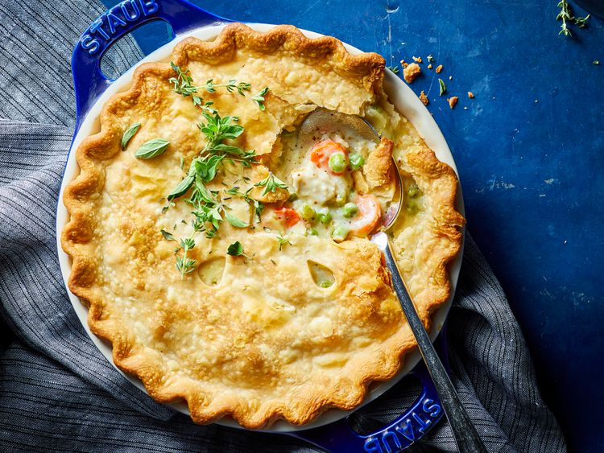

Chicken Pot Pie
back to home

A delicious chicken pie made from scratch with carrots, peas, and celery in a pre-made crust. Add thyme and poultry seasoning for more flavor.
Boil the cubed chicken with the carrots, peas, and celery for about 15 minutes. Drain and set aside. Cook the onions in butter until they're translucent, then stir in the flour and seasonings. Add the chicken broth and milk and simmer until the filling is thick. Place the chicken-vegetable mixture in an unbaked pie crust. Pour the chicken broth mixture over it. Cover with the top crust, seal the edges, and cut slits in the top to allow the steam to escape. Bake until the pastry is golden brown and the filling is bubbly.
Ingredients
- 1 pound skinless, boneless chicken breast halves - cubed
- cup sliced carrots
- cup frozen green peas
- ½ cup sliced celery
- ⅓ cup butter
- ⅓ cup chopped onion
- ⅓ cup all-purpose flour
- ½ teaspoon salt
- ¼ teaspoon black pepper
- ¼ teaspoon celery seed
- ¾ cups chicken broth
- ⅔ cup milk
- 2 (9-inch) unbaked pie crusts
Steps
- Gather all ingredients and preheat the oven to 425 degrees F (220 degrees C.)
- placeholder
- blah blah yay recipe